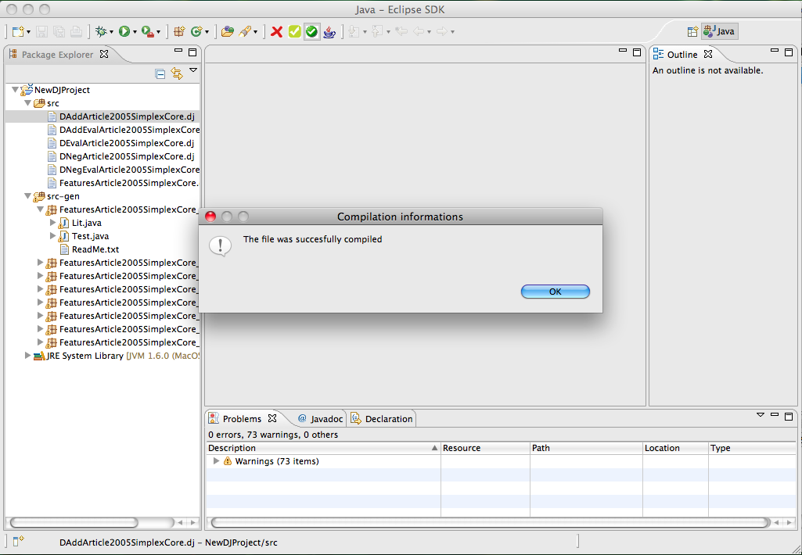

Swrtj Project
A DeltaJ project is a project with the java and xtext nature, due to the need to run java files.

The DeltaJ project structure is the following:
- src: the folder that contains the DeltaJ source files
- src-gen: the folder that contains the auto generated java files, where each package is the translation of
an DeltaJ file
- JRE System Library: that indicates the imported JRE java library
- .classpath(hidden): that also indicates that the 'src' and 'src-gen' folders contains java sources